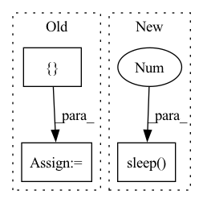

Pattern ID :32379
Before Change
// endregion
startTime = time.time()
seg_not_to_clean = [ "CV","RC","SKIN"After Change
data_list = []
print(f<filter-progress>{0.99}</filter-progress>)
time.sleep(0.2 )
print(f<filter-progress>{2}</filter-progress>)
sys.stdout.flush()
number_of_scans = 0In pattern: SUPERPATTERN
Frequency: 4
Non-data size: 3
Instances Fragment ID: 94530627
Project Name: dcbia-ortholab/slicerautomateddentaltools
Commit Name: 8f9e76bd5aa05d66c16f77078dafee469f7a315b
Time: 2022-07-01
Author: max.gillot.69@gmail.com
File Name: AMASSS_CLI/AMASSS_CLI.py
M Class Name: AnonimousClass
N Class Name: AnonimousClass
M Method Name: main(1)
N Method Name: main(1)
M Parent Class:
N Parent Class:
M File Name: AMASSS_CLI/AMASSS_CLI.py
N File Name: AMASSS_CLI/AMASSS_CLI.py
M Start Line: 718
M End Line: 879
N Start Line: 707
N End Line: 951
Before Change
hidden_size, vocab_size,
torch.distributed.get_world_size(),
np.mean(costs))
heads = [ "Type", "Case", "Mesh Shape", "//MB", "Remat", "Tie-Embed",
"//Params", "Peak Mem", "Mean Time", "Std Time", "TFLOPs"After Change
f"{peak_mem/GB:5.3f}"]
write_tsv(heads, values, f"{model_type}_megatron_{output_file_name}_rank{rank}.tsv")
print("Sleeping for 30 seconds before starting the next case. ")
time.sleep(30 )
if __name__ == "__main__":
case = eval(sys.argv[-2]) Fragment ID: 94530630
Project Name: alpa-projects/alpa
Commit Name: 39ec2de003c39454080d3bdf99dc99213896c5d1
Time: 2021-11-22
Author: zhisbug@users.noreply.github.com
File Name: benchmark/megatron/benchmark_gpt_bert_one_case.py
M Class Name: AnonimousClass
N Class Name: AnonimousClass
M Method Name: benchmark_gpt_bert_one_case(2)
N Method Name: benchmark_gpt_bert_one_case(1)
M Parent Class:
N Parent Class:
M File Name: benchmark/megatron/benchmark_gpt_bert_one_case.py
N File Name: benchmark/megatron/benchmark_gpt_bert_one_case.py
M Start Line: 185
M End Line: 204
N Start Line: 123
N End Line: 217
Before Change
keyres()
// time.sleep(0.1)
img, speed = self.grab_img_and_speed()
obs = [ speed, imgAfter Change
self.send_control([0, 0, 0, 0])
keyres()
time.sleep(0.05 ) // must be long enough for image to be refreshed
img, speed = self.grab_img_and_speed()
for _ in range(self.img_hist_len):
self.img_hist.append(img) Fragment ID: 94530628
Project Name: trackmania-rl/tmrl
Commit Name: 06bf569f78ddfc15b8cc2465f51fd04bc9c5acd9
Time: 2020-07-29
Author: yann.bouteiller@hotmail.fr
File Name: gym-tmrl/gym_tmrl/envs/tmrl_env.py
M Class Name: TMInterface
N Class Name: TMInterface
M Method Name: reset(1)
N Method Name: reset(1)
M Parent Class:
N Parent Class:
M File Name: gym-tmrl/gym_tmrl/envs/tmrl_env.py
N File Name: gym-tmrl/gym_tmrl/envs/tmrl_env.py
M Start Line: 71
M End Line: 71
N Start Line: 71
N End Line: 78
Before Change
def test_query_while_indexing():
try:
jinad_process = subprocess.Popen("jinad", shell=True, stdout=subprocess.PIPE, stderr=subprocess.PIPE)
flow_process = subprocess.Popen(
[ sys.executable, "-u", "app.py", "-t", "flows"After Change
try:
logger.info("starting jinad...")
os.system("nohup jinad > jinad.log 2> jinaderr.log &")
time.sleep(2 )
logger.info("starting app.py...")
os.system(f"nohup {sys.executable} -u app.py -t flows > flow.log 2> flowerr.log &")
time.sleep(15)
logger.info("rolling update done in process") Fragment ID: 94530629
Project Name: jina-ai/examples
Commit Name: f5b1bcec4d3ae544568b6f108fdf48ee71a3b776
Time: 2021-05-17
Author: cristian.mitroi@jina.ai
File Name: wikipedia-sentences-query-while-indexing/tests/test_query_while_indexing.py
M Class Name: AnonimousClass
N Class Name: AnonimousClass
M Method Name: test_query_while_indexing(0)
N Method Name: test_query_while_indexing(0)
M Parent Class:
N Parent Class:
M File Name: wikipedia-sentences-query-while-indexing/tests/test_query_while_indexing.py
N File Name: wikipedia-sentences-query-while-indexing/tests/test_query_while_indexing.py
M Start Line: 46
M End Line: 73
N Start Line: 47
N End Line: 69